솔국지 현황 보고 — 2026-11-20 (하루 마감)
다른 AI 모델 · 다른 작업자에게 넘기는 문서. 이 문서 하나로 게임의 흐름 · 시스템 · 11/11 이후의 변화 · 약점을 파악할 수 있게 썼다. 앞 문서: docs/현황_1111.html. 출처: 작업현황.md 97 · 105~109 절, docs/전투_프레임_알고리즘_1119.md, data/changelog.json, git log. 스크린샷은 점검 인자로 찍은 실제 게임 화면(450×968, Mobile 렌더러).
1. 한눈에
솔국지는 Godot 4.4.1 로 만든 세로 화면 삼국지 카드 오토배틀러다(안드로이드 APK · PC EXE, 개인 프로젝트). 카드를 받고(징집) · 같은 카드를 모아 한 등급 위 장수로 올리고(조합) · 진형에 편성하면, 전투는 자동 · 실시간으로 진행되고 사람은 구경한다. 최후의 한 세력이 남을 때까지 날이 이어진다(1.0r 에서 토너먼트 삭제). 혼자 하기(봇)와 온라인(4 · 6 · 8명 방, 빈자리 봇)이 있다. 기준은 온라인 대전이다(사용자 원칙: 싱글은 힘을 뺀다).
| 항목 | 지금 |
|---|---|
| 버전 | 1.1h (code 39, 11/20) —— 변경 내역 등록. 마지막 배포 빌드는 1.1g (code 38). 1.1h APK · EXE 는 이번 마감에서 지휘자가 빌드 |
| 전투 화면 | 전쟁 삽화 방식만 (1.1e, Settings.PAINTING_ONLY). 3D · 수묵 · 점묘 · 옛 군집은 꺼 두고 손대지 않는다 (사용자 결정) |
| 전투 속도 규칙 | 속도 100 = 초당 1번 공격 (행동 간격 = 100 / 속도 초, 1.1h, 사용자 결정) |
| 규모 | 카드 385장 · 장수 개성(고유 행동) 142명 · 고유기 데이터 60개 · 인연 47개 · 군략 카드 81장 · 역할 갈래 9개 · 병종 8개(창병 · 기병 · 궁병 · 도적 · 책사 · 유생 · 술사 · 모사) |
| 11/11 이후 | 판 1.0l → 1.1h (22판) |
2. 한 판의 흐름 · 화면
- 하루 = 오전 · 오후 · 저녁 3페이즈 (
Run.PHASE_N). 머리띠에 「DAY 6 · 토요일 오전」, 요일은 7일 주기. - 지는 구조: 민심(hp 100). 패배 피해
HP_QUEST [7,9,11,13,18,23,31]× (0.35 + 적 남은 비), 8일차부터 7일차 값 × 1.25^(일차−7). 혼자 하기 대전 ×0.6 · 온라인 ×1.0. 0 이면 멸망 (깃발 꺾임 · 처형 연출 · 엔딩 순위). - 판 길이(측정, 11/12): 온라인 어림 4석 평균 7.3~7.4일 · 8석 7.8~7.9일.
- 보상은 이기든 지든 같다(1.0p, 민심만 깎임). 군량은 페이즈마다 3, 연승 · 연패 2/3/4번이면 +1/+2/+3 (1.1g).
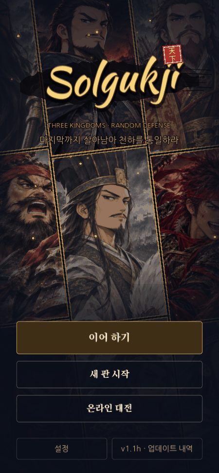
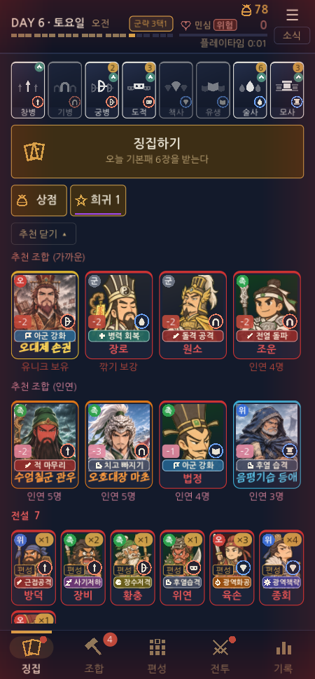
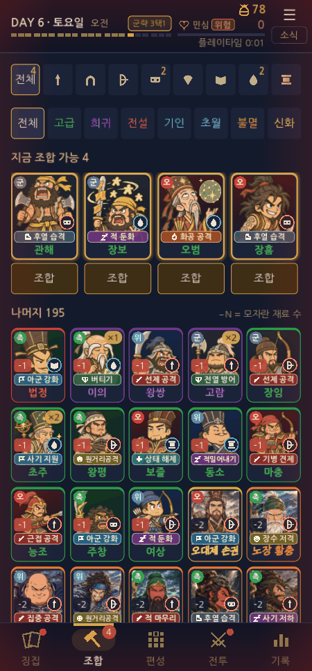
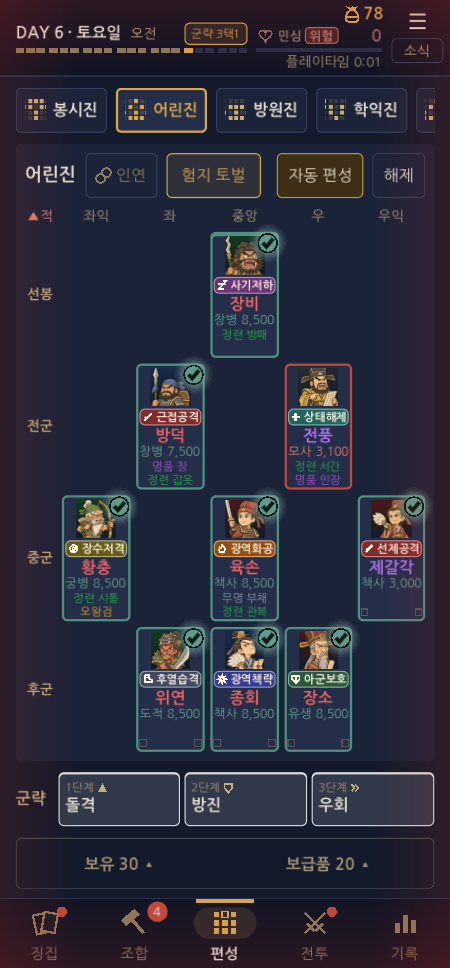
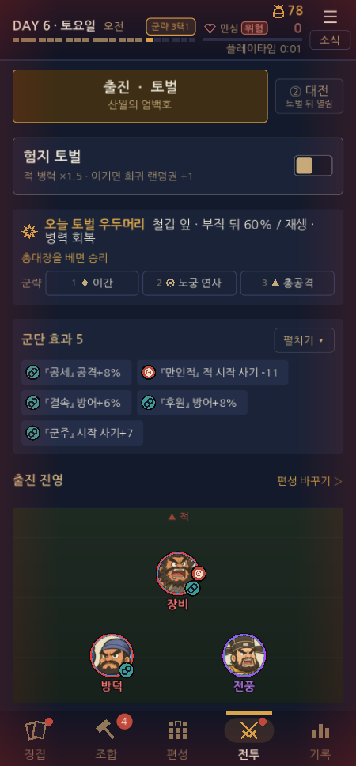
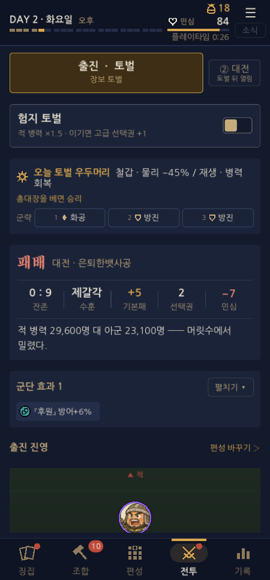
장수 정보 시트
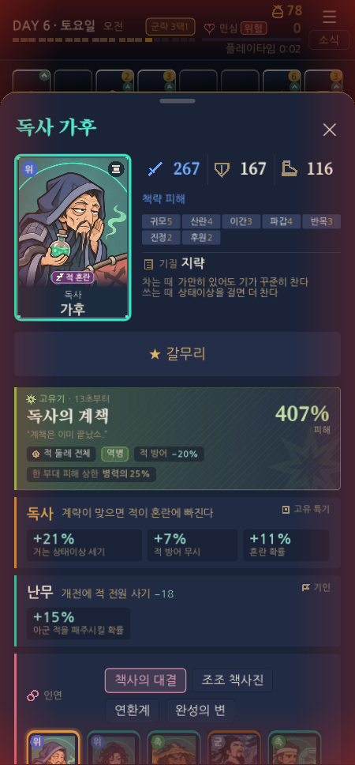
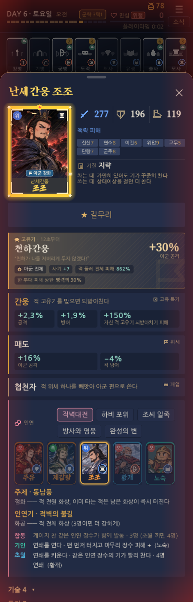
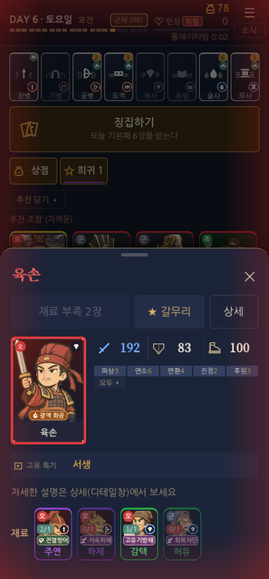
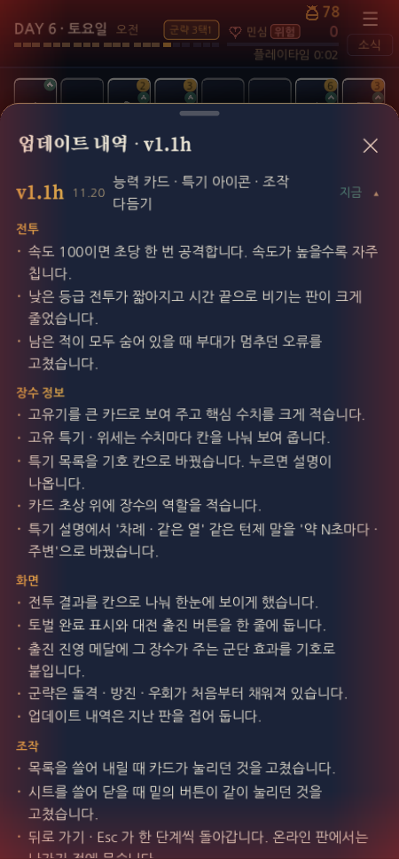
3. 핵심 시스템
| 시스템 | 내용 |
|---|---|
| 장수 등급 | 1~8 (병졸 → 고급 3 → 희귀 4 → 전설 5 → 초월 6 · 불멸 7 · 신화 8). 기인은 별도 줄. 원칙: 높은 등급을 덱빌딩으로 뒤집지 못한다(등급 격차 유지). |
| 조합 | 같은 카드 · 재료를 모아 한 등급 위로. 추천 조합 · 이유 · 조합 전후 손익 미리 보기(11/19). 장수 선점제: 남이 먼저 데려간 기인 이상 장수는 조합 불가(1.0n). |
| 특기 | 개인 · 단체 특기, 계열 연쇄, 위세(초월 이상), 패업. 설명에서 턴제 말(차례 · 같은 열)을 "약 N초마다 · 주변"으로 바꿈. 디테일창은 계열 기호 6열 격자, 누르면 설명(1.1h). |
| 장수 개성 | 142명 모두에 고유 행동 하나(조인 도발 · 주태 불사 · 관우 처형 · 여포 무쌍 연쇄 · 제갈량 팔진, 1.1f). 발동하면 머리 위에 이름. 고유(금색) 특기는 3급부터. |
| 역할 칩 | data/roles.json —— 갈래 9개의 색 · 기호, 글은 "전투에서 하는 일"(근접 공격 · 적 마무리 · 후열 습격 · 병력 회복 …). 카드 초상 위 · 디테일창 · 갈무리창 · 편성판. |
| 고유기 | 기 100 이면 기 모으기 → 컷인 → 큰 이펙트. 같은 계열도 인물마다 모양이 다르다(주유 불벽 · 육손 불기둥 줄 · 황개 불배 · 방통 사슬). 돌격 고유기는 실제로 부딪히는 순간 터짐. 고유기를 더 오래 못 쓴 진영이 먼저 정함(공정화). |
| 군략 | 전투 3단계마다 카드 한 장(정면 · 기동 · 수비 · 원거리 · 책략 상성). 덱에 맞는 병종이 많을수록 강함. 하루 끝 3택1로 손패가 는다. 기본 계획 돌격 · 방진 · 우회. |
| 진형 | 8종, 모두 좌우 대칭 · 한 줄 4칸까지(1.0t). 의미는 칸 배치와 병종별 칸 선호. |
| 인연 | 47개. 한 장수가 기를 모으면 같은 인연의 게이지 찬 아군이 함께 발동(초월 끼면 4명), 기인은 연쇄를 열고 초월은 키운다. 연쇄 끝에 인연 주제 효과(적벽 = 불길). |
| 기질 | 장수마다 기 모으는 방식(예: 지략 —— "차는 때 가만히 있어도 기가 꾸준히 찬다"). 맹장 기질은 고유기 대기 짧음(1.1f). 갈무리창에 설명 두 줄(1.1h). |
| 연승 보너스 | Run.streak · STREAK_GRAIN {2:1, 3:2, 4:3} 군량. 온라인은 다음 아침 지급. 수치는 처음 잡은 값. |
| 사기 | 전군 사기 상한 200. 100 초과분은 금색 + "100 (+20)" 표기. 30 미만이면 패주 판정, 총붕괴 · 결전 때 깎임(병력 많으면 덜). |
| 아이템 · 군량 | 무기 · 갑옷 두 칸, 고대 등급 16개(뽑기 전용, 30번 천장). 장수 판매로 군량. |
| 토벌 | 온라인에서도 끝까지 이어짐 · 총대장을 베면 승 · 우두머리 성질이 날마다 다름 · 이기면 장비 한 점(1.1f). 험지 = 적 병력 ×1.5. |
4. 전투 (삽화 방식만)
- 구조: 결정적 엔진(
battle.gd+rt_battle.gd)이 끝까지 미리 계산하고, 화면(battle_view.gd·Type2View·war_painting)은 그 결과를 재생한다. 혼자 하기는 계산을 스레드로(BattleView.async_sim, 「전투 준비 중…」), 온라인은 서버가 계산. - 속도: 행동 간격 = 100 / 속도 초 (
RtBattle.spd_rule). 일반 기술은 "약 4초마다" 식으로 표기. - 이동 (
algo_v2): 비켜 가기 관성 + 원거리 다가서기. 원거리가 막혀 선 시간 51.0 → 25.1초/판 (240판). - 화면 요소: 위 띠(아군 · 적 병력, 시간, 사기 게이지 —— 100 초과는 "100 (+7)"), 일시정지 · 배속(토벌 2×, 대전 1.25×), 메달 이름표(병력 47k 표기 · 사기 막대), 상태 기호, 떠오르는 피해 숫자, 고유기 컷인(동안 위 띠 숨김), 「적 고유기 준비」 칸, 아래 장수 카드(병력 "8.8k").
- 개입 없음 —— 결정은 전투 전(편성 · 군략)에 끝난다.
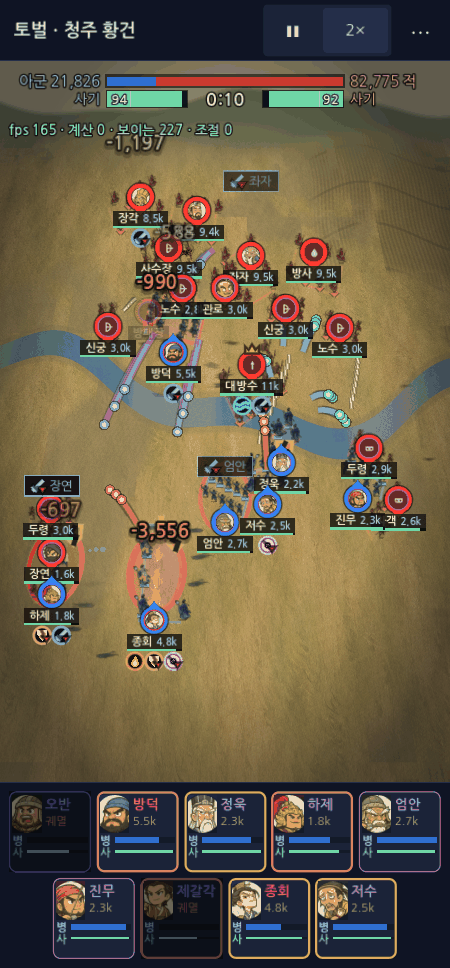
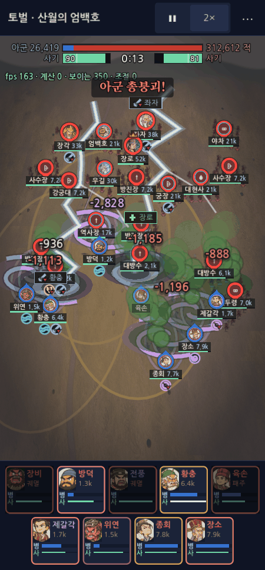
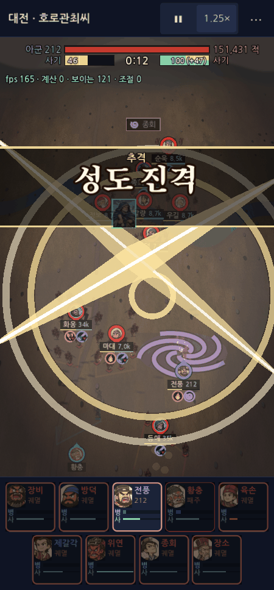
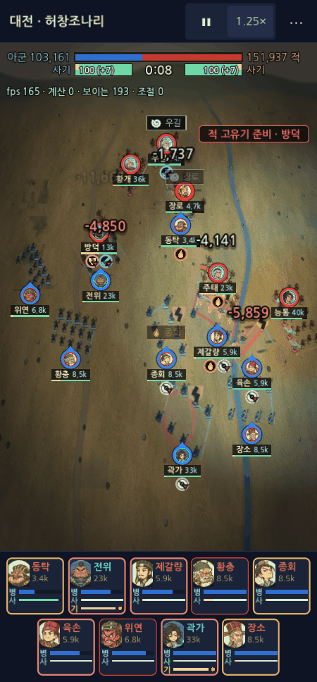
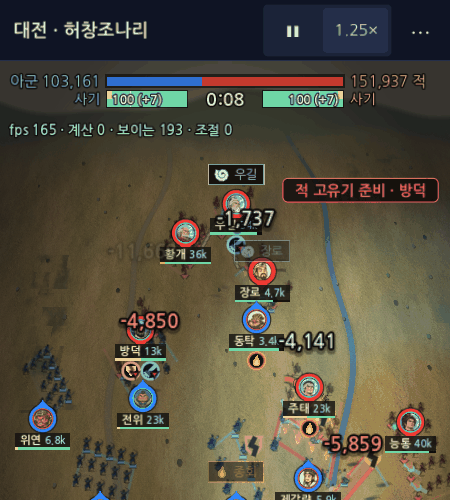
5. 온라인
| 항목 | 내용 |
|---|---|
| 서버 | 집 PC server.bat (포트 7777) · WebSocket · Tailscale Funnel 고정 주소. 서버(scripts/net/room.gd)가 전투를 판정한다. |
| 방 | 방 만들기 / 코드 참가 / 대기실, 4 · 6 · 8명(빈자리 봇). 봇도 민심이 있고 멸망. 봇 상대 승률 목표 1~2일차 약 65% · 3~4일차 60% · 5일차부터 55% (1.1d, 플레이 기록으로 맞춤). |
| 끊긴 판 돌아가기 | 온라인 판 진행 중이면 user://net_live.json 에 주소 · 방 코드. 타이틀 「대전으로 돌아가기」 (Online.live_mark · rejoin). 3시간 지나면 없는 것으로. 점검 --grejoin. |
| 프레임 실측 기록 | 전투 하나를 다 보면 클라이언트가 {"t":"perf"} 를 보냄 → playlog_online/*.jsonl 의 ev:"perf". 칸: n · avg · max · s25 · s50 · lv · top · os · dev · gpu · win. 주의: start 의 os 는 서버의 OS. |
| 조작 | 뒤로/Esc 는 한 단계씩, 온라인 판에서는 나가기 전에 확인. 준비 · 방 만들기 연타 잠금. 서버 state 로 다시 그리기는 누르는 동안 미룸(Online._render_soon). |
| 주의 | 이동 알고리즘 · 처리 순서 · 속도 규칙은 전투 결과를 바꾼다 —— 서버도 같은 소스로 재시작해야 온라인 판정에 반영된다. |
6. 11/11 → 지금 변경 요약
| 판 | 날짜 | 요약 |
|---|---|---|
| 1.0m | 11/12 | 진형 개편(모든 진형에 5칸 꽉 찬 줄) · 편의 |
| 1.0n | 11/12 | 하루 흐름 개편: 아침 1분(징집 · 조합 · 편성), 보상은 다음 아침 일괄, 장수 선점제 |
| 1.0o | 11/12 | 양군 사기 게이지 · 인연 대사 · 토벌 종료 |
| 1.0p | 11/12 | 온라인 보상 차등 없음 · 랜덤권 |
| 1.0q | 11/12 | 험지 토벌 · 인연기 |
| 1.0r | 11/13 | 토너먼트 삭제 → 최후의 1인, 봇 민심 · 멸망, 민심 피해 ×1.8, 장수 판매 |
| 1.0s | 11/13 | 인연 겹침 정리(51 → 47) · 군량 표시 |
| 1.0t | 11/13 | 아이템 두 칸 · 고대 등급 · 군량 뽑기 · 진형 8종 재편 |
| 1.0u | 11/14 | 화면 규칙 통일 · 추천 조합 · 신화 보정 |
| 1.0v | 11/15 | 일러스트 새 단장(기본 143명 · 기인 22 · 불멸 31) |
| 1.0w | 11/15 | 군략 카드(전투 3단계) · 인연기 연출 강화 |
| 1.0x | 11/16 | 후열 고유기 충전 · 사기 패주 개선 |
| 1.0y | 11/16 | 대전 준비 10초 · 멀티 다듬기 |
| 1.0z | 11/16 | 전쟁 삽화 화풍 · 고정 사선 전장 |
| 1.1a | 11/17 | 삽화 고유기 이펙트 · 돌격 고유기 · 상태 기호 |
| 1.1b | 11/18 | 온라인 반응(명령 번호) · 닫은 전투 재생 정지 · 기록 정리 |
| 1.1c | 11/18 | 모바일 프레임: 삽화가 부하 단계를 따름 |
| 1.1d | 11/19 | 온라인 토벌 적 병력 · 봇 전투력을 기록으로 맞춤 |
| 1.1e | 11/19 | 삽화 전용 · 프레임 6.47 → 4.20ms · 이동 알고리즘 · 고유기 선수 공정화 |
| 1.1f | 11/19 | 장수 개성 142명 · 공격력 ×1.25 · 토벌 차별화(총대장 · 장비 보상) |
| 1.1g | 11/19 | 역할 칩 · 메달 병력/사기 · 사기 상한 200 · 고유기 갈래 · 연승 보너스 · 연속 전투 누수 수정 |
| 1.1h | 11/20 | 속도 100 = 초당 1번 · 디테일창 능력 카드 · 특기 아이콘 · 결과 칸 · 조작 폴리싱(뒤로/Esc · 누름 판정) · 끊긴 판 돌아가기 · 군략 기본 계획 |
11/20 커밋 흐름: 01cf8ca 속도 규칙 → d544920 · 56e6b18 UI 폴리싱 1 · 2차 → a6e9df5 · f134a35 조작 → e82a7ff 조작 회귀 점검 → 152a88d 결과 칸 → f28c662 · 4a7b443 능력 패널 카드화.
7. 측정해 둔 수치 · 밸런스 상태
속도 규칙 (예전 → 새 규칙, 4,160판, tests/spd_balance) —— 3장 이상 덱 승률
| 병종 | 예전 | 새 규칙 | 차 |
|---|---|---|---|
| 기병 | 54.3% | 58.2% | +3.9 |
| 도적 | 47.4 | 52.1 | +4.7 |
| 궁병 | 47.8 | 49.6 | +1.8 |
| 모사 | 53.8 | 55.7 | +1.9 |
| 술사 | 50.9 | 50.9 | 0 |
| 창병 | 51.1 | 48.0 | −3.1 |
| 책사 | 44.9 | 39.4 | −5.5 |
| 유생 | 39.6 | 34.7 | −4.9 |
등급별 전투 길이 (같은 측정)
| 등급 | 3 | 4 | 5 | 6 | 7 | 8 |
|---|---|---|---|---|---|---|
| 예전 (초) | 36.3 | 35.1 | 38.0 | 36.7 | 28.1 | 34.7 |
| 새 규칙 (초) | 20.1 | 26.7 | 31.5 | 34.3 | 26.7 | 30.3 |
- 3급은 61% 가 20초 미만. 시간 끝 판은 3급 43 → 3.
- 거울 대전 A 승률 50.3%. 덱 평균 속도가 높은 쪽 승률 59.5 → 62.5%.
- 고유기 선수 공정화: 같은 덱 A 승률 67.2 → 48.1% (960판), 서로 다른 덱 진영 교체 49.0% (480판).
- 프레임 (PC · Mobile 렌더러,
motion5_replay): 평균 6.47 → 4.20ms (1.1e), 이후 점검에서 약 4.3ms. p95 11.98 → 6.18 · 최대 20.6 → 9.9 · 그리기 호출 700 → 580. 실기기 미측정. - 연속 전투 누수: 4초씩 24판 끊어 보기에서 4.5 → 11.9ms 로 커지던 것을 고침 → 24판 내내 4.5ms.
- 이 PC 재현 시도(11/19 밤): 토벌 29부대 · 대전 18부대, RTX 3070 · UHD 770, 평균 2.4~5.8ms, 컷인 중 6.7ms.
- 밸런스 수치 자체는 1.1f(공격력 ×1.25 등) 뒤로 건드리지 않았다. 사용자 원칙: 밸런스는 마지막에 한 번, 데이터로.
8. 약점 · 고민거리
tools/android/sdk/platform-tools/adb.exe 에 있으나 연결 기기 없음. 사용자는 프레임 저하를 느끼지만 PC 에서 재현 안 됨 → 서버 기록 ev:"perf" 로 실기기 수치를 받는 중.5d058c9).9. 다른 모델에게 묻고 싶은 것
- 속도 규칙(100 = 초당 1번)을 유지하면서 책사 · 유생을 살리는 방법: 속도 보정 vs 행동당 효과 크기 조정 vs 기술 준비 시간을 행동 수와 떼기 — 어느 쪽이 밸런스를 덜 흔드나?
- 3급 전투 20초는 짧은가? 낮은 등급 전투 길이를 늘릴 손잡이(병력 · 방어 · 사기)는 무엇이 좋은가?
- "행동마다" 효과(독전 · 인술 · 방진)를 초 단위로 바꾸는 것이 맞나, 등급별 계수로 누르는 것이 맞나?
- PC 에서 재현 안 되는 모바일 프레임 저하 —
perf기록(avg · max · s25 · s50 · lv · top)으로 원인을 좁히는 순서는? - 고유기 카드의 주인공 수치는 피해로 고정할까, 첫 효과로 둘까?
- "결정은 전투 전에 끝난다" 구조에서 관전의 재미(군략 공개 · 컷인 · 인연 연쇄)가 충분한가, 짧아진 전투에서 무엇을 줄일까?
10. 부록 —— 파일 지도 · 점검 방법
| 무엇 | 어디 |
|---|---|
| 프로젝트 | solgukji_godot/ (Godot 4.4.1) |
| 판정 엔진 | scripts/battle.gd · scripts/rt_battle.gd (spd_rule · algo_v2 · _camp_order) |
| 한 판 진행 | scripts/game/run.gd (PHASE_N · HP_QUEST · streak · dev_nosave) |
| 화면 | scripts/ui/game_screen.gd (점검 인자 10행 · _dev_args()) · ui.gd · press.gd · online.gd · battle_view.gd · card_view.gd · card_tile.gd |
| 서버 | scripts/net/room.gd · server.bat · 기록 playlog_online/*.jsonl |
| 데이터 | data/ game · cards_ext · passives · ultimates · inyeon · tactics · roles · changelog (.json) |
| 문서 | 루트 작업현황.md (절 번호순, 최신 맨 끝) · docs/전투_프레임_알고리즘_1119.md · docs/장수_개성_정리_1119.md · docs/업데이트_내역.html |
점검 씬 (tests/)
| 점검 | 무엇 · 최근 결과 |
|---|---|
determinism | 같은 시드 = 같은 결과, 30판 실패 0 |
net --players=2 | 온라인 2인 · 재접속, rc=0 · 오류 0 |
ctl_check | 조작 회귀(입력을 넣음, 헤드리스 약 1분) 40개 실패 0 |
tac_check | 군략, 실패 0 |
motion5_replay | 전투 프레임, 평균 약 4.3ms |
battle_chain | 연속 전투 24판 프레임 · 노드 · 그리기 호출, 4.5ms 유지 |
spd_rule · spd_balance | 속도 규칙 실험 · 4,160판 밸런스 |
algo_audit | 이동 품질 · 진영 치우침 · 시뮬 시간 |
async_sim | 스레드 계산 = 바로 계산 |
| 그 밖 | motion5_combat_regression · target_area_regression · rear_morale_regression · inyeon · claim_rules · ult_dash · ult_look · last_one · game --runs=N(자동 진행) |
스크린샷 찍기
cd solgukji_godot && ../tools/Godot_v4.4.1-stable_win64_console.exe --path . --rendering-method mobile --resolution 450x968 --position 2000,100 -- --gnew=7 --gplay=15 --gpage=deploy --gquiet --gshot=out.png --after=1.5
--gpage=draw|forge|deploy|war·--gbattle=pvp|quest(--speed=8 --gclose면 결과까지) ·--gsheet=card:K22|recipe:c100|update+--gnoband.- 주의:
--gquiet는 찍기 전에 시트를 닫는다 —— 시트를 찍을 때는 빼야 한다. - 점검 인자(
--g…)가 있으면 사용자 저장을 쓰지 않는다(Run.dev_nosave).--gplay가 클수록 높은 등급 카드(6 · 15 · 21).
이 문서의 스크린샷: docs/report_1120/ 15장. 모든 수치는 위 출처의 측정값이며, 판 수를 함께 적었다.